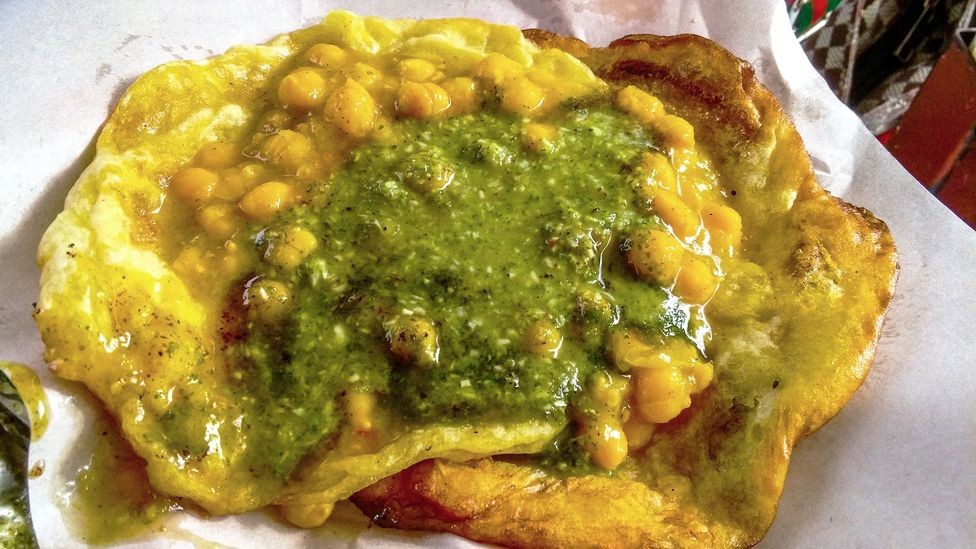

Doubles Recipe

Description
A traditional Trinidadian street food consisting of
a soft dough that is fried, topped with curry. They are served
in pairs, hence the name doubles, and are often consumed by locals.
Ingredients
Bara
- 2 cups all purpose flour
- 1/2 teaspoon baking powder
- 1 teaspoon salt
- Pinch tumeric
- 2 teaspoons sugar
- 1 cup lukewarm water
- 1 tablespoon vegetable oil
- 2 cups vegetable oil for frying
Channa
- 1/2lb dried chickpeas
- 1 teaspoon baking soda
- 1 tablespoon minced culatro
- 1 tablespoon garlic
- 1/8 teaspoon tumeric
- 1 1/2 tsp bandhania
- 1/2 teaspoon amchar massala
- 1-2 tsp Himalayan salt
Steps
Bara
- In a medium bowl, add flour, baking powder, salt, yeast, tumeric, and sugar
- Add lukewarm water gradually and mix to form very soft, slightly sticky dough.
Do not over knead.
- Rub dough with oil, cover and set aside for an hour to six hours
(The longer the rest, the softer the bara)